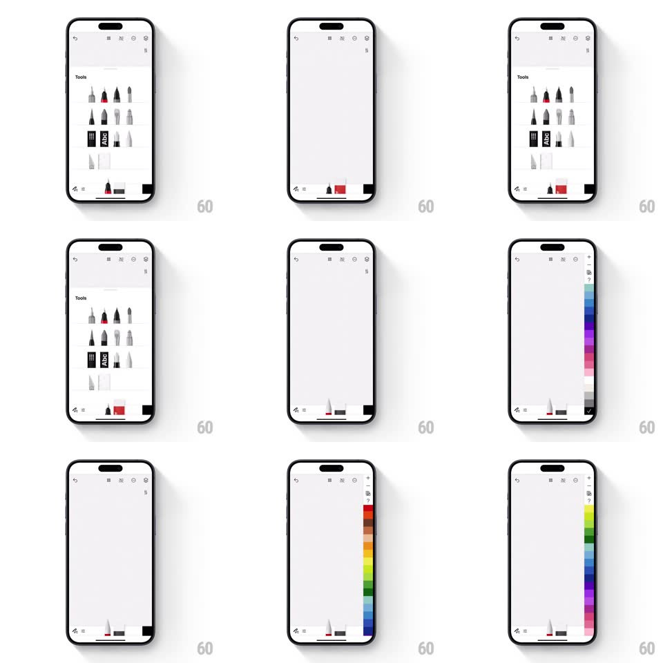

Media
Frame-by-frame

Rebuild this interaction 1:1: Tayasui Sketches' tool dock flow - a Tools bottom sheet slides up showing a grid of illustrated brushes, selecting one swaps the dock's active tool, and tapping the color swatch slides a vertical watercolor color strip in from the right edge.

Rebuild this interaction 1:1: Tayasui Sketches' tool dock flow - a Tools bottom sheet slides up showing a grid of illustrated brushes, selecting one swaps the dock's active tool, and tapping the color swatch slides a vertical watercolor color strip in from the right edge. ## Integration Integration: stack-agnostic spec - springs given as stiffness/damping, timed motions as duration + curve; map every value to your framework and animation library of choice. ## Scene Canvas with a bottom tool dock (tool icon, sizes, color swatch). Tools sheet: white sheet titled "Tools" with a 3-column grid of realistically rendered tool icons (pencils, brushes, markers, rulers). Color strip: a tall narrow vertical gradient panel (blues, greens, pinks, purples, grays) hugging the right edge with a check button at its foot. ## Motion spec Pattern: dock-sheet swap with edge-mounted color strip. - Tap the tool icon: the Tools sheet slides up (spring ~320/22) while the dock slides down and out beneath it (250ms) - one replaces the other in the same slot. - Selecting a tool: the tapped icon does a quick dip (scale 0.92, 120ms) and the sheet slides back down, the dock returning with the new tool's icon already swapped (crossfade 150ms mid-flight). - Tap the color swatch: the vertical color strip slides in from the right (spring ~340/20, tracking dismissible by horizontal drag 1:1), its hues painted with a watercolor texture. - Dragging along the strip: a loupe dot rides the touch, and the dock's swatch updates its color LIVE (no commit needed until the check). - The check button confirms: the strip slides back out right (spring ~360/24) and the swatch settles with a small pop (scale 1.15 -> 1). ## Calibration - The color strip is narrow (~56px) - a sliver of the palette, thumb-reachable. - Sheet and strip never coexist; opening one dismisses the other. ## Reduced motion Sheet and strip fade in place. ## Don't miss - The dock is the same surface across all three states (idle, tools, color) - it transforms rather than stacking modals. - Color commits live to the swatch during the drag - the user watches their tool change color as they slide.